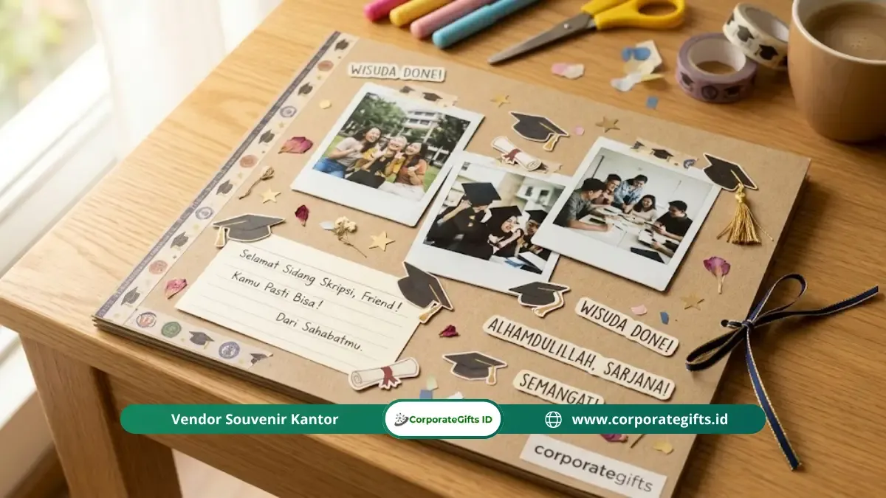

Corporate Gifts ID - Scrapbook handmade adalah kado sidang skripsi personal berupa buku kenangan berisi foto, pesan tulisan tangan, dan dekorasi yang dirangkai sendiri untuk merangkum perjalanan kuliah penerima. Kado ini bermakna karena setiap halamannya menunjukkan waktu dan perhatian tulus pemberi, dengan perkiraan biaya sekitar Rp75.000 hingga Rp220.000 tanpa memerlukan keahlian desain profesional.
Poin Kunci Scrapbook Kado Sidang Skripsi:
- Arsip Emosional Nyata: Merangkum perjalanan perkuliahan dalam satu buku fisik yang dapat disentuh dan dikenang selama bertahun-tahun.
- Nilai Sentimental Tinggi: Usaha dan waktu yang diluangkan pemberi membuat kado ini jauh lebih berharga daripada barang pabrikan instan.
- Biaya Terjangkau: Total pengeluaran bahan hanya sekitar Rp75.000 hingga Rp220.000, fleksibel disesuaikan dengan isi dompet mahasiswa.
- Tanpa Skill Rumit: Kunci keindahannya bertumpu pada ketulusan pesan dan konsistensi skema warna, bukan teknik grafis digital.
- Koleksi Terintegrasi: Panduan ini melengkapi ulasan mendalam Kado Sidang Skripsi Personal dan Sentimental.
Panduan praktis ini menguraikan struktur isi yang paling menyentuh hati, langkah pembuatan mandiri langkah demi langkah, rincian anggaran material, serta komparasi antara scrapbook dan foto album handmade.
Mengapa Scrapbook Menjadi Kado Sidang Skripsi yang Berkesan?
Scrapbook menjadi kado kelulusan sidang yang tak lekang oleh waktu karena menggabungkan foto, tulisan tangan, dan ikatan emosional ke dalam wujud fisik yang nyata.
Riset dalam bidang psikologi tentang memori autobiografis menunjukkan bahwa ingatan masa lalu manusia terbukti lebih cepat dipanggil kembali saat distimulasi oleh isyarat visual dan taktil, seperti lembaran foto cetak dan goresan tinta tangan.
Sebuah scrapbook bekerja layaknya kapsul waktu yang membawa penerimanya kembali pada suka duka begadang di perpustakaan, revisi berkali-kali bersama dosen pembimbing, hingga kelegaan saat dinyatakan lulus sidang.
Keunggulan mutlak scrapbook dibanding galeri foto ponsel pintar adalah sentuhan ragawinya. Penerima dapat meraba tekstur kertas kraft, merasakan timbulan stiker, dan membaca doa tulisan tangan sahabat karibnya secara intim.
Apa Saja yang Harus Ada di Dalam Scrapbook Sidang Skripsi?
Scrapbook sidang skripsi sebaiknya memuat elemen yang bercerita secara kronologis, bukan sekadar menempelkan ratusan foto tanpa konteks. Lima bagian esensial berikut akan membuatnya sangat berkesan:
1. Foto-Foto Pilihan yang Memiliki Cerita
Utamakan foto yang menangkap momen autentik: potret hari pertama orientasi kampus (ospek), foto lelah mengerjakan tugas besar bersama, momen tawa saat nongkrong di kantin, hingga potret kebersamaan tepat di depan ruang ujian sidang.
2. Pesan Tulisan Tangan dari Orang-Orang Terdekat
Pesan tulisan tangan mengubah album foto menjadi surat cinta kolektif. Mintalah sahabat seangkatan, adik tingkat, dan anggota keluarga menuliskan satu atau dua kalimat tulus berisi kebanggaan atas ketangguhannya menyelesaikan skripsi.

Kombinasi pesan tulisan tangan sahabat, foto masa perkuliahan, dan hiasan washi tape menghadirkan nilai kenangan tak ternilai.
3. Kutipan Relevan Perjalanan Kuliah
Sematkan lirik lagu pembangkit semangat yang sering diputar saat mengerjakan skripsi, kutipan buku favoritnya, atau celetukan penyemangat dari dosen penguji yang paling berkesan.
4. Timeline Singkat Kronologi Perkuliahan
Sajikan rangkuman garis waktu visual dari semester awal, masa magang, penelitian lapangan, hingga babak akhir skripsi. Cukup rangkum 5 hingga 7 titik balik penting yang bermakna.
5. Halaman Spesial Hari Sidang
Sediakan halaman penutup untuk foto berselempang di hari H sidang, potongan kartu absensi sidang, serta ruang kosong khusus agar penerima dapat menuliskan refleksi perasaannya sendiri.
Bagaimana Cara Membuat Scrapbook Handmade Tanpa Keahlian Desain?
Menghasilkan scrapbook yang rapi tidak menuntut sertifikasi desain grafis. Kuncinya berada pada ketelitian dan konsistensi tema visual. Ikuti enam langkah praktis berikut:
- Tentukan Skema Warna Utama: Pilih dua atau tiga warna dasar yang senada, misalnya perpaduan warna jas almamater, warna pastel kesukaannya, atau nuansa earthy tone (cokelat kraft dan krem).
- Kumpulkan & Cetak Foto: Minta foto rahasia dari teman-temannya. Cetak dalam berbagai variasi ukuran (ukuran 4R, polaroid mini, atau kolase kotak).
- Gunakan Buku Binder Kertas Tebal: Beli buku scrapbook berbobot kertas minimal 200 gsm agar lembaran tidak melengkung saat ditempeli foto dan lem.
- Simulasikan Tata Letak (Dry Run): Letakkan foto dan ornamen di atas kertas tanpa lem terlebih dahulu. Potret susunannya dengan ponsel sebelum mulai menempel permanen.
- Tuliskan Pesan dengan Tinta Kontras: Gunakan drawing pen warna hitam atau pulpen gel metallic emas dan perak agar tulisan tampak tajam dan estetik.
- Tambahkan Ornamen Tiga Dimensi: Tempelkan pita satin tipis, washi tape motif, atau amplop mini berisi surat terlipat untuk menciptakan efek kejutan visual.
Berapa Biaya Membuat Scrapbook Handmade untuk Kado Sidang Skripsi?
Total anggaran pembuatan scrapbook mandiri berkisar antara Rp75.000 hingga Rp220.000. Biaya ini sangat terjangkau bagi kantong mahasiswa dan jauh lebih murah dibanding membeli paket hampers mewah di pusat perbelanjaan, sementara nilai memorianya tak terhingga.
Tabel Estimasi Komponen & Biaya Scrapbook Handmade
Berikut rincian estimasi biaya material dasar pembuatan scrapbook personal kado sidang skripsi:
| Komponen Material | Estimasi Biaya | Deskripsi / Spesifikasi | Tips Penghematan |
|---|---|---|---|
| Buku Scrapbook / Binder | Rp20.000 - Rp80.000 | Kertas kraft tebal 200+ gsm, spiral atau ring binder | Pilih binder polos lalu hias sampul sendiri |
| Cetak Foto (30 Lembar) | Rp30.000 - Rp60.000 | Ukuran 3R/4R dan strip polaroid doff tahan sidik jari | Cetak kolase 4 foto dalam 1 lembar ukuran 4R |
| Stiker, Pita & Kertas Dekoratif | Rp15.000 - Rp50.000 | Washi tape, stiker tema wisuda, kertas doilies | Gunakan potongan majalah bekas & tiket memo kenangan |
| Spidol & Lem Scrapbook | Rp10.000 - Rp30.000 | Drawing pen, spidol metallic, double tape roller | Gunakan alat tulis yang sudah dimiliki di rumah |
Apa Perbedaan Scrapbook dan Foto Album Handmade?
Kendati sama-sama memuat dokumentasi foto, terdapat perbedaan karakteristik mendasar antara keduanya:
- Scrapbook: Bersifat ekspresif, bebas, dan dinamis. Fokus utamanya adalah narasi cerita kehidupan melalui perpaduan kolase foto miring, curahan hati tulisan tangan, tiket bioskop bekas, dan ornamen hiasan. Sangat tepat bagi pemberi yang suka bereksplorasi kreasi tangan.
- Foto Album Handmade: Bersifat rapi, terstruktur, dan minimalis. Foto diletakkan dalam orientasi lurus simetris dengan sentuhan dekorasi sederhana pada bagian sampul atau bingkai. Sangat cocok bagi yang menginginkan hasil akhir elegan dan ringkas.
Kesimpulan & Rekomendasi Hadiah
Scrapbook buatan tangan adalah perwujudan kado sidang skripsi yang paling tulus dalam mengapresiasi kerja keras seorang sahabat. Hadiah ini membuktikan bahwa keberhasilan mereka layak dirayakan secara istimewa melalui bukti fisik yang tak lekang oleh waktu.
Jika Anda ingin memadukan scrapbook kenangan ini dengan cenderamata pendamping yang fungsional untuk memasuki dunia kerja profesional, simak pilihan Souvenir Kantor dan gift set eksklusif di halaman Katalog Resmi CorporateGifts.ID.